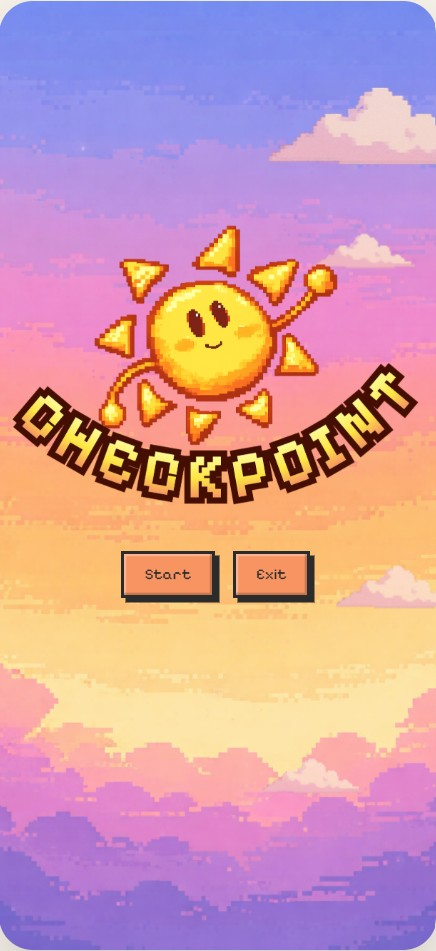
In this module I was assigned to make either an application or website based around an educational topic that approved Tech4Good guidelines. Checkpoint is a wellbeing and self-care mobile application designed to help users manage daily tasks, practice mindfulness and build healthy habits through small, achievable actions. The application focused on improving engagement, accessibility and emotional support for users who may struggle with motivation, stress or mental fatigue.
Many wellbeing applications focus heavily on productivity and habit tracking, which can unintentionally overwhelm users during periods of stress or low motivation. The challenge was to redesign the experience around emotional support and accessibility, encouraging users to engage with self-care through small achievable actions rather than large commitments.
The goal was to create an interface that felt calm, welcoming and rewarding while maintaining clear navigation and functionality. The redesign needed to balance mental wellbeing principles with engaging interactions that encouraged long-term use.
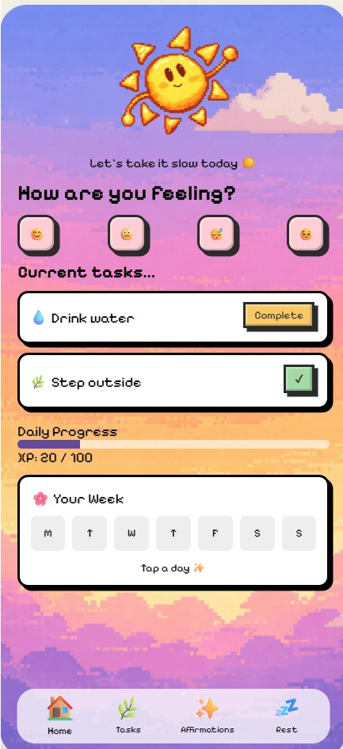
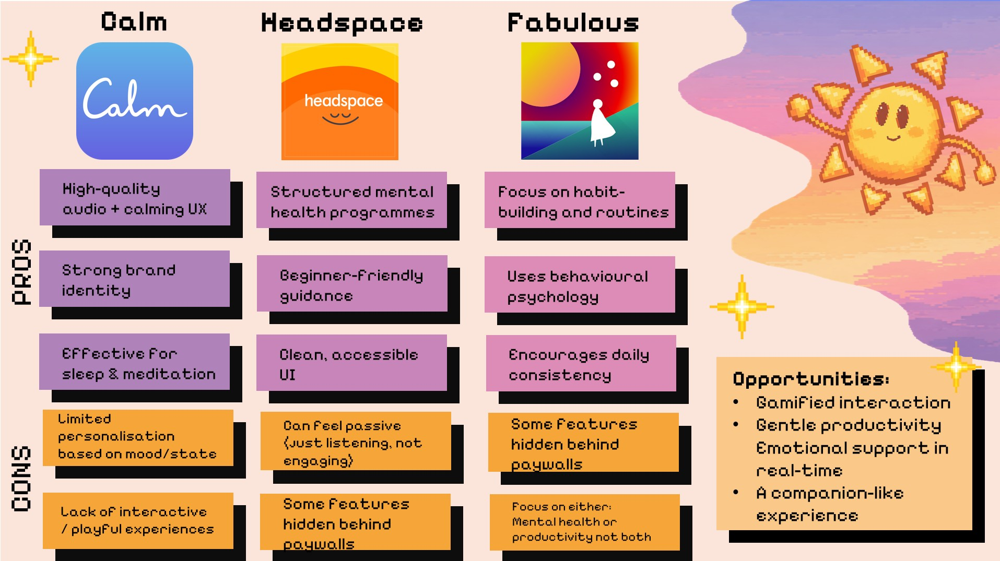
The project began by analysing existing wellbeing and habit-tracking applications to identify common UX patterns, strengths and pain points. Research highlighted that many users abandoned wellbeing apps due to overwhelming interfaces, excessive notifications or unrealistic goals.
To address this, I explored calming visual styles inspired by cosy games and digital wellbeing products. This influenced the soft colour palette, rounded components and the creation of Soli, a companion character designed to provide positive encouragement throughout the experience.
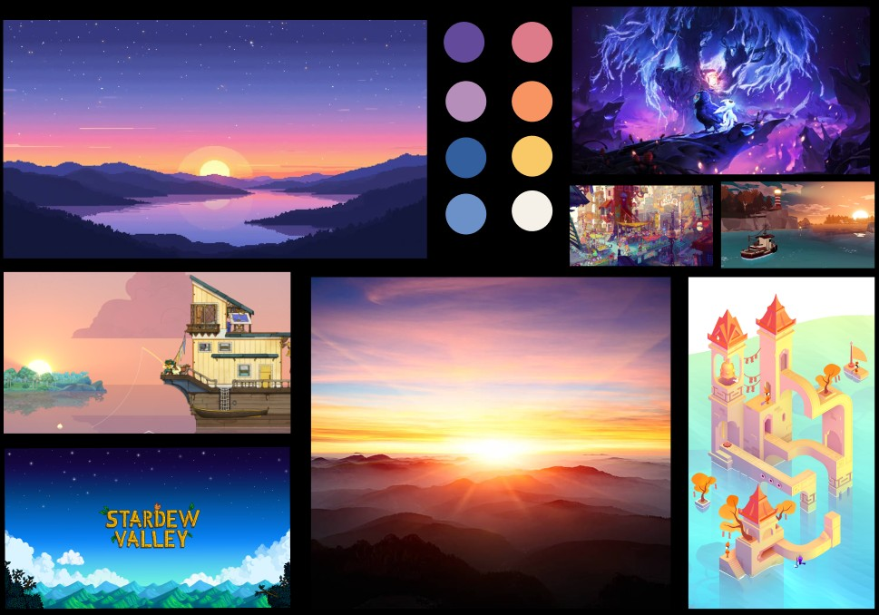
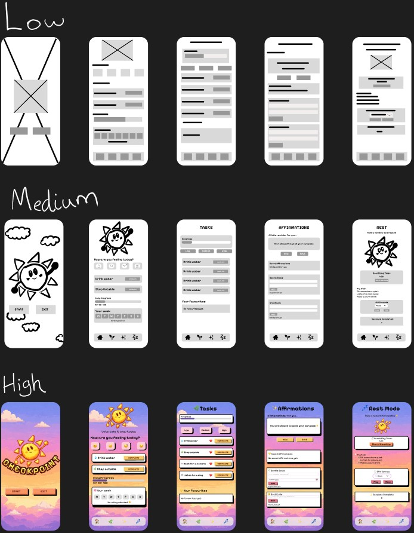
Early wireframes focused on simplifying navigation and reducing cognitive load. The application was organised into distinct sections including Tasks, Affirmations, Goals, Gratitude Journaling and Guided Rest Sessions.
User journeys were mapped to understand how individuals would move through the application. A survey was also conduction to gather information on how my target audience feels towards mental health apps already and what they like or do not like. I was able to gather a good amount of stats to help back up my design choices and make mental health apps more of an enjoyable experience.
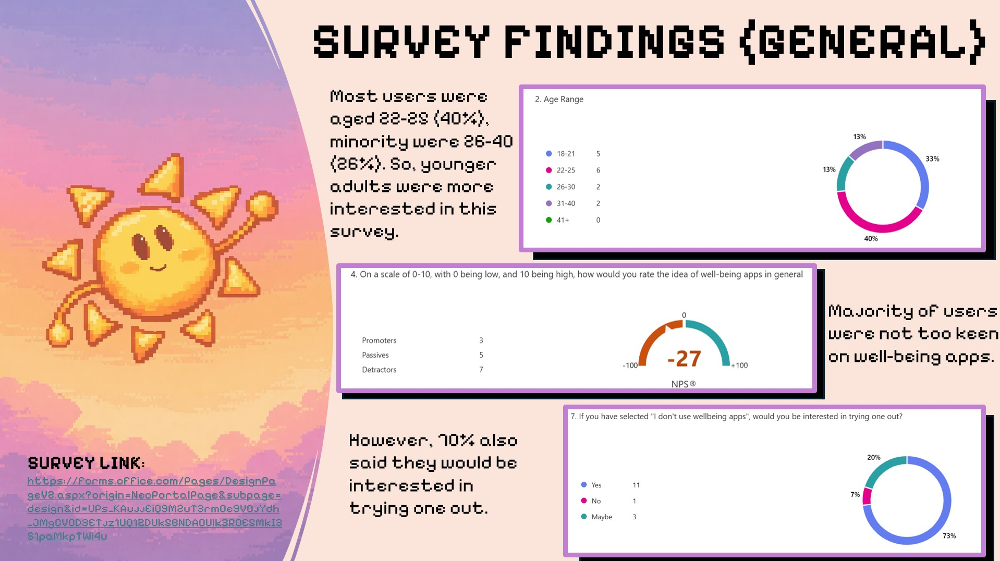
After establishing the visual direction and user flows, the next stage was considering how the design could be translated into a functioning prototype. The focus shifted towards creating meaningful interactions, reward systems and micro-animations that would support the application's wellbeing goals.
Features such as task completion rewards, breathing exercises, goal tracking and affirmation saving were planned to increase engagement while maintaining a calm and supportive experience. In addition to some animated elements to increase the visual experience.
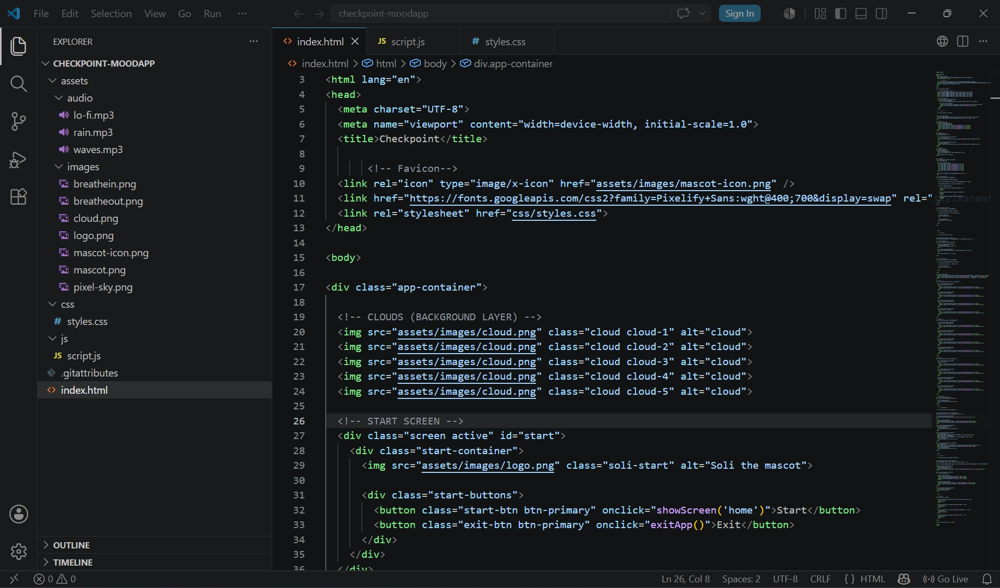
The final prototype was developed using HTML, CSS and JavaScript within Visual Studio Code. Interactive functionality was implemented across multiple screens, including task completion systems, breathing exercise animations, affirmation saving, gratitude journaling and goal tracking.
A progression system was introduced through XP and level mechanics to reward small achievements without creating unnecessary pressure. Significant attention was also given to transitions, animations and responsive layouts to create a smooth and comforting user experience.
Three usability tests were conducted to evaluate navigation, accessibility and engagement. Participants completed a series of tasks while eye-tracking data was collected to understand attention patterns and user behaviour.
The findings showed that users naturally focused on the Tasks section first, followed by Affirmations and Rest activities. Eye-tracking data also revealed repeated returns to the task system, indicating that it acted as the primary engagement point within the application.
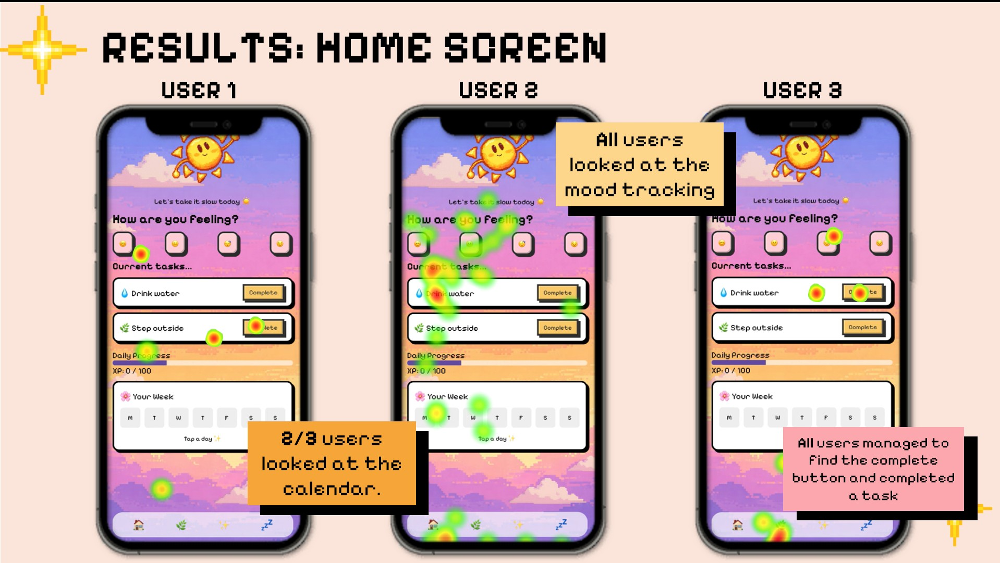
Feedback highlighted the calming aesthetic, intuitive navigation and supportive tone of the interface. Suggestions included refining some interactions and improving visual feedback, which were incorporated into the final prototype.
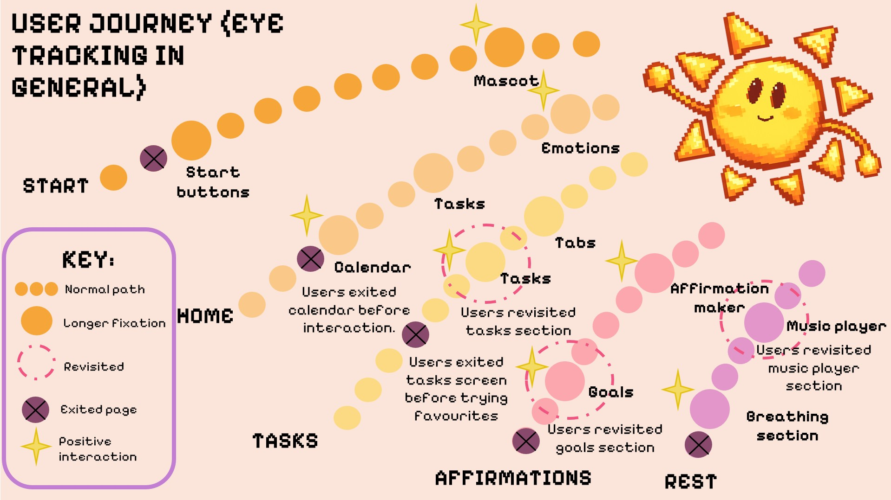
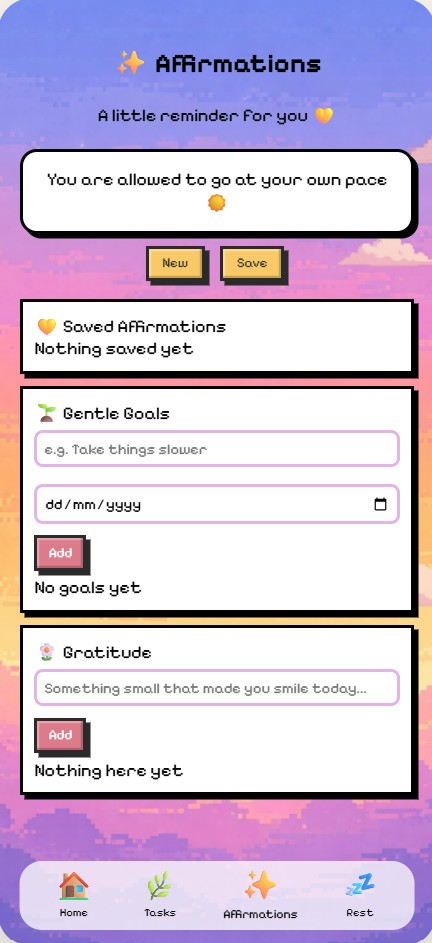
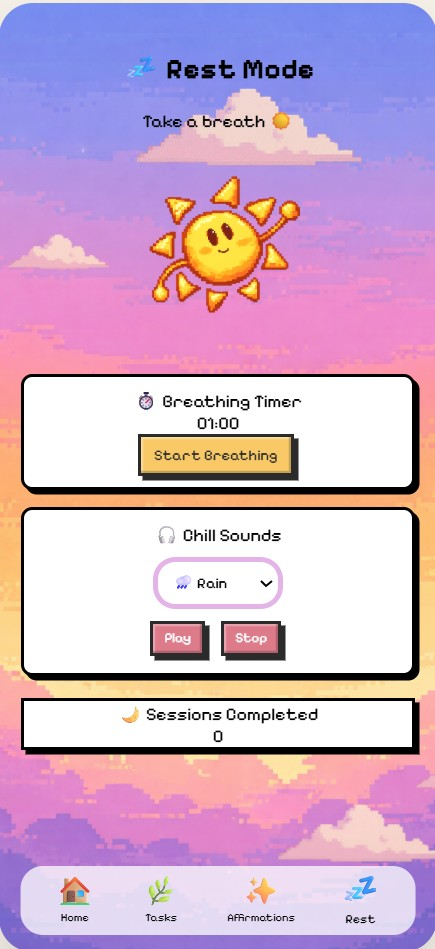
The final application combines calming visual design with practical wellbeing tools to support users throughout their day. Soft colours, playful pixel-art elements and the Soli companion character work together to create a welcoming experience that feels supportive rather than demanding.
Key features include task management, gratitude journaling, affirmations, breathing exercises and progress tracking. Together these elements encourage small positive actions while promoting consistency and self-care.
This project strengthened my understanding of user-centred design by combining research, testing and development into a complete UX process. Conducting eye-tracking studies allowed me to move beyond assumptions and make design decisions based on real user behaviour.
The project also improved my front-end development skills, particularly in JavaScript, where I implemented interactive systems such as progress tracking, goal completion checklists, animations and reward mechanics. Overall, the project demonstrated how thoughtful UX design can create digital experiences that feel supportive, engaging and meaningful.